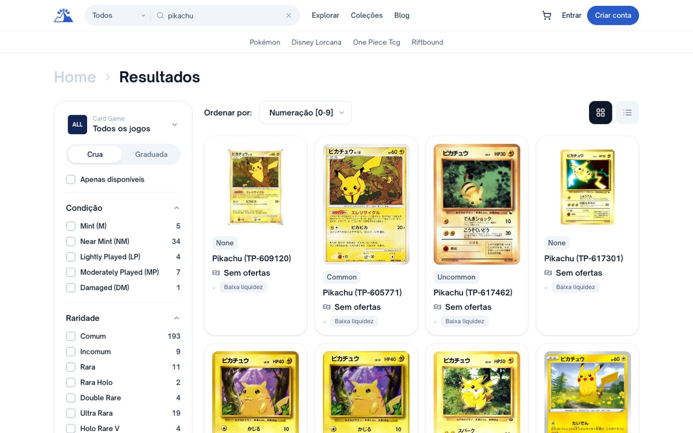
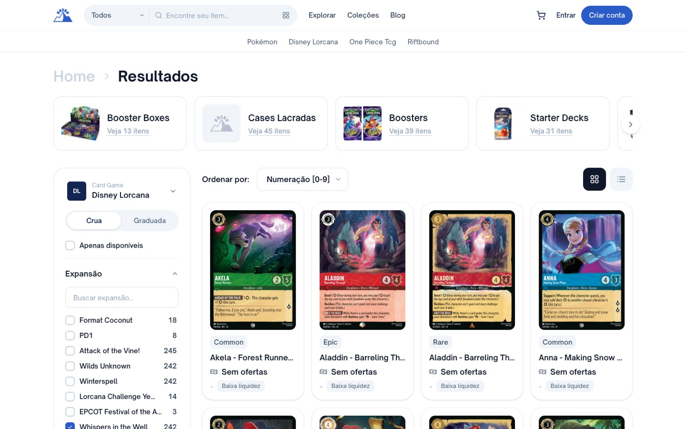

- Fluxo
- Busca e navegação por coleção
- Frequência
- Toda busca, todo usuário
- Impacto
- Percepção falsa de catálogo; abandono
O padrão da busca mostra um catálogo que quase não está à venda
Tarefa do usuário
"Quero ver quais cartas de Elsa dá para comprar." E depois: "quero ver o que tem do set Whispers in the Well."
O que aconteceu
Busquei elsa. Vieram 36 produtos em 2 páginas. Três tinham alguém vendendo. Os dois primeiros compráveis estavam nas posições 17 e 24 da primeira página; o terceiro só na página 2. Tudo o mais dizia "Sem ofertas".
Busquei pikachu — a carta mais buscada do mundo. Vieram 29 páginas de resultados. Na primeira página, zero compráveis. Com o filtro de disponibilidade ligado, sobram 3 páginas: cerca de 10% do que a busca me mostrava por padrão.
Busquei OP02-013 — o exemplo que o próprio site sugere no placeholder da home. Seis resultados, todos sem oferta.

Os 24 resultados da primeira página, todos "Sem ofertas". Repare na barra lateral: ela anuncia Comum 193, Ultra Rara 19, Near Mint 34 — o usuário lê isso como abundância. E note os códigos TP-609120 com raridade None. screenshots/04-busca-pikachu-24-resultados-zero-ofertas.png
Medi o marketplace inteiro. A proporção não é um acidente de uma busca:
| Jogo | Catálogo (~) | Com oferta (~) | % com oferta |
|---|---|---|---|
| Pokémon | 52.000 | 1.490 | 2,9% |
| Disney Lorcana | 3.190 | 460 | 14,3% |
| One Piece TCG | 7.080 | 745 | 10,5% |
| Riftbound | 1.490 | ≤ 24 | 1,6% |
| Total | ~63.700 | ~2.720 | ~4,3% |
Por coleção o efeito é ainda mais desigual, e isso importa para a recomendação:
| Set de Lorcana | Cartas | Disponíveis | Compráveis na 1ª página |
|---|---|---|---|
| 13 · Attack of the Vine! | 245 | ~216 | 20 / 24 |
| 12 · Wilds Unknown | 242 | ~168 | 15 / 24 |
| 11 · Winterspell | 242 | 8 | 2 / 24 |
| 10 · Whispers in the Well | 242 | 9 | 1 / 24 |
| 9 · Fabled | 243 | ~30 | 7 / 24 |
No set mais recente o estado padrão funciona bem. Nos sets antigos — exatamente onde vai o colecionador que quer completar coleção — o usuário folheia 11 páginas de cartas mortas para encontrar 9 compráveis, a menos que descubra sozinho o checkbox "Apenas disponíveis", que vem desmarcado.

Primeira página do set: 23 de 24 cartas sem oferta. O checkbox "Apenas disponíveis" está na lateral, desmarcado, sem destaque nenhum. Ligá-lo reduz o set inteiro a 9 cartas. screenshots/09-lorcana-set10-primeiros-resultados-sem-oferta.png
Expectativa do usuário
Em um marketplace, o comportamento aprendido é que a listagem mostra o que está à venda. Mercado Livre, OLX, MyPCards, Liga: em todos, resultado = produto comprável. O catálogo completo é uma enciclopédia, e enciclopédia é uma segunda função, não a primeira.
Por que isso é um problema
- Cria percepção falsa de catálogo e depois a desmente. A barra lateral promete 193 Pikachus; a realidade entrega zero na primeira página. A decepção é pior do que se o site parecesse pequeno desde o início.
- Custo por tentativa alto. O usuário abre carta após carta antes de entender a regra. Cada clique é uma página inteira carregada para descobrir "ninguém vende".
- A ordenação padrão piora tudo. Ela não considera disponibilidade, e o único critério que resolve o problema — Menor preço — está escondido dentro de um dropdown.
Benchmark
MyPCards e as Ligas nascem do estoque: se ninguém cadastrou, a carta não aparece na listagem de venda. Eles têm o problema oposto — é difícil pesquisar uma carta que ninguém vende, mesmo quando você só quer ver o preço histórico. O Jornada escolheu o caminho de catálogo-primeiro, que é estrategicamente melhor (é o que permite ter livro de ofertas, histórico de preço e demanda registrada). O erro não é ter catálogo completo; é usar catálogo completo como estado padrão de uma tela de compra.
Hipótese de solução
- Inverter o padrão: "Apenas disponíveis" ligado por default, com um contador visível do tipo "9 à venda · 233 sem oferta — mostrar todas". Barato, reversível, e o contador transforma a ausência em informação.
- Ranquear em vez de filtrar: manter tudo, mas jogar itens sem oferta para o fim e agrupá-los sob um separador. Preserva a função enciclopédia sem sacrificar a de compra.
- Separar as duas intenções: a listagem de um set vira "à venda"; o catálogo completo vira uma visão explícita de coleção ("marcar o que eu tenho"), que é o que o colecionador realmente quer daquela tela.
A opção 2 me parece a mais alinhada ao que vocês estão construindo, porque não esconde a demanda potencial — e a demanda potencial é matéria-prima do livro de ofertas.